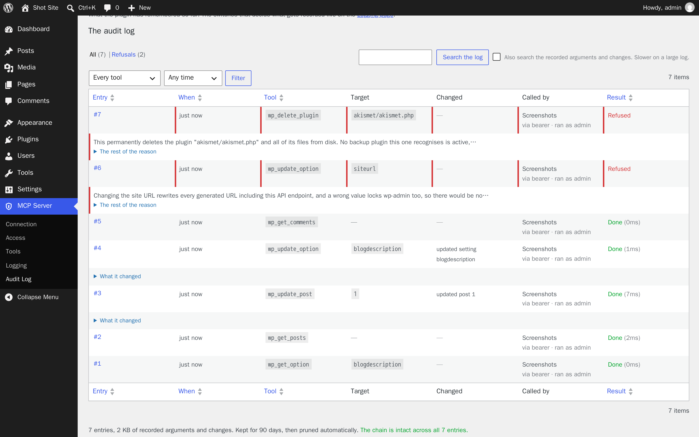
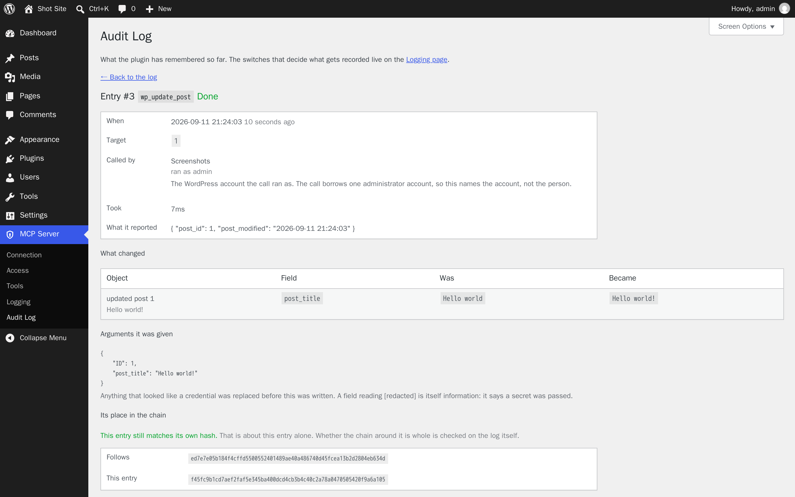

preview: true says what it would do
A search and replace, a delete or a rewrite describes every match and everything attached to it, and changes nothing.
Comments, post bodies and plugin descriptions are written by strangers, and a model has no reliable way to tell an instruction from content it was asked to read. So this is what the agent got back instead.
wp_delete_plugin akismet/akismet.php Refused
This permanently deletes the plugin "akismet/akismet.php" and all of its files from disk. UpdraftPlus is active but has never completed a backup, so there is nothing to fall back on. Nothing has been changed. To go ahead, call this tool again within two minutes with the same arguments plus confirm set to "a3f9c21e84b07d55".
Guarded MCP is a Model Context Protocol server for WordPress. It gives an agent everything an administrator can do, and refuses the things you would not want done on a misread instruction.
A capability answers who sent the request. It says nothing about who wrote the text the request was based on, and those two differ exactly when it matters. An administrator's agent acting on a sentence it found in the comment queue is, to WordPress, an administrator acting.
So the guards sit on the operations themselves, where a model cannot argue its way past them. Each one below is a guard the plugin actually applies, with the reason it gives.
wp_delete_plugin wp_delete_theme wp_delete_menu two calls
The first changes nothing and returns a token bound to that exact target, so one instruction cannot complete a deletion, and the refusal passes through your transcript where you can see what was about to happen.
wp_install_plugin wordpress.org only
Installs are by slug. An arbitrary ZIP URL is refused unless you deliberately open a filter, and the download host is checked too, so a plugin cannot rewrite the repository's answer.
wp_update_post wp_add_widget filtered, whoever is calling
WordPress lets an administrator store raw HTML. The capability is revoked for the write anyway, because the caller being an administrator says nothing about who wrote the markup. Blocks, shortcodes and inline styles survive; iframes and script do not.
default_role checked by construction
Anything granting more than a subscriber is refused, rather than checking a list of capabilities that would never stay complete. The rule belongs to the option, so every tool that can write it is bound by it.
siteurl home admin_email not writable at all
A wrong site URL locks you out of wp-admin with no route back through the API, and writing the administration email directly would skip the confirmation that protects password recovery.
wp_deactivate_plugin wp_delete_plugin not on itself
Turning this plugin off would close the connection carrying the call that asked for it, so the agent gets a dropped request rather than a result and no way back in to undo it. Do it from wp-admin, where you can see what you are doing.
preview: true says what it would do
A search and replace, a delete or a rewrite describes every match and everything attached to it, and changes nothing.
wp_undo_change puts an edit back
It remembers what a setting or a post said before an agent changed it. Only writes made through the API are recorded, never your own, and reverting needs the same access the original change needed.
no restore tool, at any access level
It can start a backup before a risky change and tell you when one last completed. Restoring discards everything since that backup, and no confirmation makes that safe, so the tool does not exist.
Refusals are recorded with the reason, because those are the entries worth keeping. Each one hashes the entry before it, so a row edited or removed later shows up as a break rather than disappearing quietly.


The content and site-data tools are on by default: posts, pages, block content, taxonomies, comments, media, users, post meta, site options, post types, block patterns and theme mods. Site administration is off by default, and so is each integration below — each appears only when its plugin is installed, and each exists because writing through the generic tools looks like it worked and does not.
WooCommerce off by default
Products, stock, orders, order notes, customers and sales figures, through the WooCommerce CRUD classes rather than posts and meta. No refunds: moving money through a payment gateway is not something a tool call can put back.
Elementor off by default
Theme-builder conditions written to both the template and Elementor's cached registry, CSS regeneration, and applying a library template without the design passing through a tool argument. Reading the active kit's global colours, fonts and settings, and switching between the kits the site already has — clearing the generated CSS with it, since switching the option alone leaves every page rendering the old design. No kit import: rewriting a site's whole design system from an archive in one call is not something this can put back.
Kirki off by default
Customizer field discovery and value get/set that resolves the field's storage model — theme_mod, grouped option or standalone option — so a written value lands in the row the front end actually reads, not a row nothing reads. Google Fonts cache clearing, since changing a typography field does not invalidate the cached CSS on its own, and config export with credential-shaped values redacted. No import, for the same reason as the Elementor kit import.
Yoast SEO off by default
Per-post SEO metadata read/write through the Surfaces API, and indexable rebuild. Since Yoast 14.0 the front end reads from a derived table, not from post meta, so writing the post meta directly leaves the indexable stale: the front end renders the old title while the admin shows the new one. These write through Yoast's own API and rebuild the indexable, and refuse computed analysis fields like scores.
Advanced Custom Fields off by default
Custom field discovery and value get/set through update_field /
get_field with field key references. ACF needs a hidden reference
(_fieldname = field_123abc) to return the right type; without it a post
object comes back as a bare ID, an image as a bare attachment ID, or an options-page
field as null. These write through ACF's own API, which writes both the
value and the reference, and refuse unregistered fields and arbitrary option
prefixes.
Backups if you have a backup plugin
Start one before a risky change, list what exists, and see when one last completed. Listings never include archive filenames, because on both supported plugins the filename is what keeps the archive from being downloaded by anyone who guesses it. No restore tool, at any access level.
Clients that speak OAuth need only the address. They send you to a WordPress login and a consent screen, and only an administrator can approve one. For a command-line agent, make a named key on the Access page and pass it as a header.
claude mcp add --transport http wordpress \
https://example.com/wp-json/mcp/v1/http \
--header "Authorization: Bearer YOUR_KEY"A key is narrower than a password. It carries its own access level, an optional expiry, and an optional list of the only tools it may call. Keys are stored hashed and shown once, and each acts as the administrator who created it, so the log can say whose agent did what and revoking someone's access revokes their agent with it.